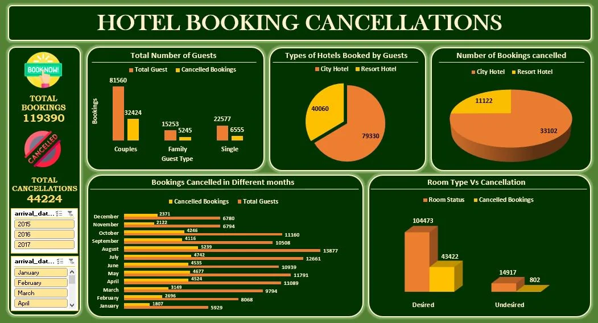
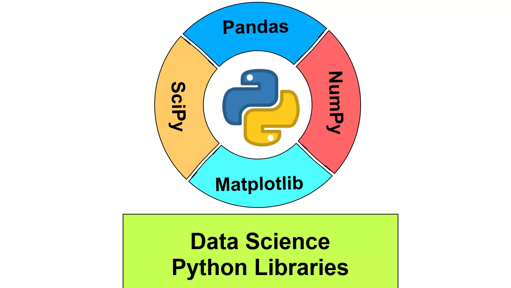

Deep Learning
Deep learning notebooks including CNNs, ANN models, and real-time applications.
View RepoMachine Learning A to Z
A complete ML roadmap including supervised and unsupervised learning projects.
View Repo
Excel Analytics: Hotel Booking
Excel dashboard and data cleaning for hotel booking and cancellation trends.
View Repo
Power BI Projects
Power BI dashboards for sales performance and data storytelling with KPIs and visuals.
Sales DashboardFull Project

Python Libraries
Practical use cases and visualizations with core Python libraries like Pandas, NumPy, Seaborn, and Matplotlib.
Pandas NumPy Matplotlib Seaborn
More on GitHub
For full code, tutorials, and updates, check out all my work on GitHub.
Visit My GitHubPython
Extensive experience with Python for data science, automation, and web scraping.
Machine Learning
Skilled in both supervised and unsupervised learning algorithms, model training, and evaluation.
Data Visualization
Proficient with tools like Matplotlib, Seaborn, and Power BI to create insightful visualizations.
Deep Learning
Experience with TensorFlow, Keras, and building CNNs and RNNs for real-world applications.